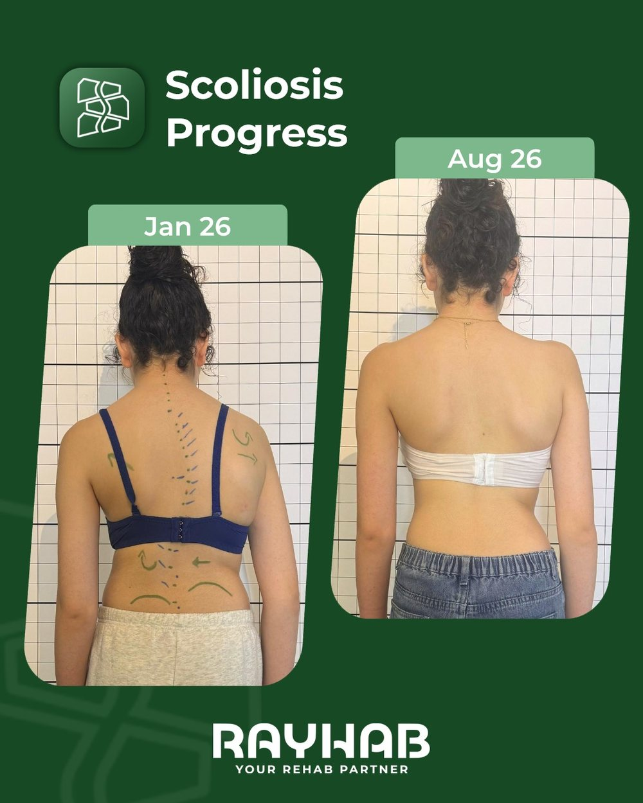

Case 01
Nine months
Measured on X-ray
Measured on X-ray
Nine months, and two curves that moved
A double curve, thoracic and lumbar, re-measured on X-ray after nine months of rehabilitation. The photographs record standing posture between January and August 2026; the angles below span the full nine months.
Thoracic curve
29° reduced to 20°
Lumbar curve
25° reduced to 17°
“I’m so grateful for the progress I’ve made and for the confidence I’ve gained throughout this journey.”
Vanessa Halimeh